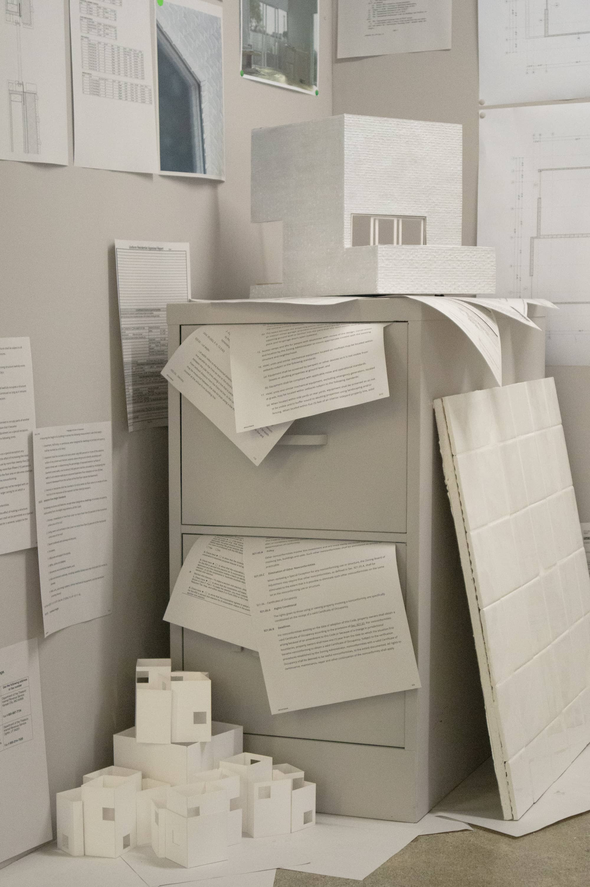
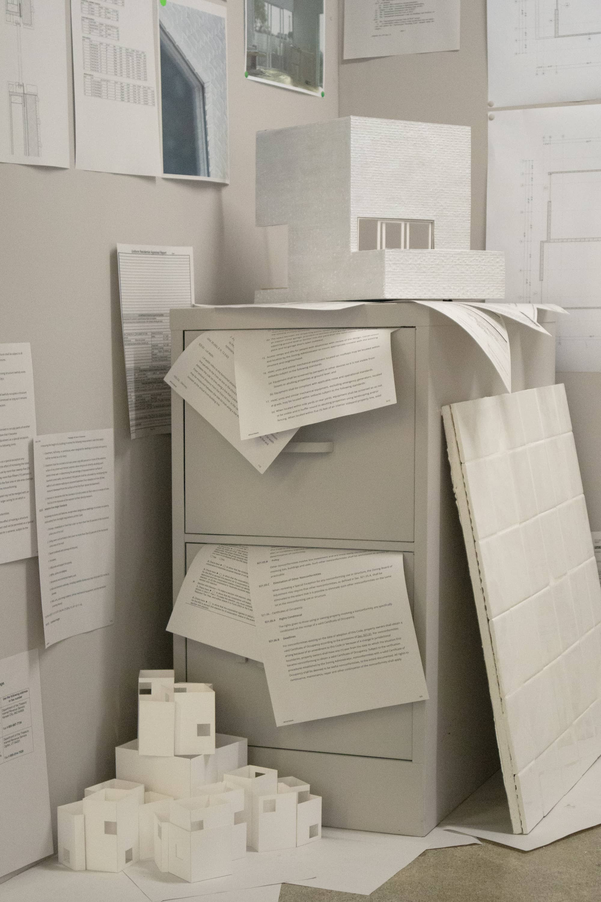

Approaching Value
Jono Coles
May 2024
Bauer Wurster Hall
Berkeley, CA
Approaching Value confronts a fundamental discrepancy in architectural practice; the profession is valued in theory as a fine art while operating in practice as a bureaucratic, managerial service. This discrepancy has mislocated the domain and value of architectural labor, obfuscating practice’s true staging between bureaucratic regimes of finance and governance. Suffocated and paralyzed, can new models of practice confront this staging to explore alternative systems of value, and propose other ways of living?
This project presents the office of a young architecture practice through the documentation of its first project, a flexible co-housing building in Pittsburgh, PA. Each document in the office confronts an approach to value: a method for determining the value of architecture. Appraisals, estimates, applications, etc. are strewn across the workplace. Upon closer inspection, each defines value through different criteria, varying in subjectivity from the simple multiplication of factors from real estate websites, to rigorous schedules for each set of building components and the labor required to install them. Amidst this disarray, the work of the office has become the exploitation of these subjectivities; each format is manipulated slightly to the advantage of the architect(ure).
This new practice is defined by exploring the discrepancies between these approaches to value: the building is permitted and financed as two single-family homes, legalized as six condominiums, and inhabited as up to twelve studios. Its setbacks and spatial planning exploit the poor overlaps between the IRC and local building codes. Its assemblies are slightly sagged, drooped, and underdone, retaining their evaluatory definitions while becoming almost unrecognizable. Sloppy brick, exaggerated parquet floor, and fractured tile appear conventional on paper, while resolving in practice as slightly unfamiliar and sincerely deceptive, teetering between standardness and nonconformity. This project narrates a practice that puts forth new models of living by hacking systems of value.
This project was made possible by support of Neyran Turan and Andrew Atwood.
 Installation in Bauer Wurster Hall.
Installation in Bauer Wurster Hall.
 Sectional Model (Foreground) and Material Mockups (Background)
Weeping Joint and Inflated Parquet Mockups

Chunk Model, Fracture Tile Mockup, and Study Models
Installation view.
Sectional Model (Foreground) and Material Mockups (Background)
Weeping Joint and Inflated Parquet Mockups

Chunk Model, Fracture Tile Mockup, and Study Models
Installation view.